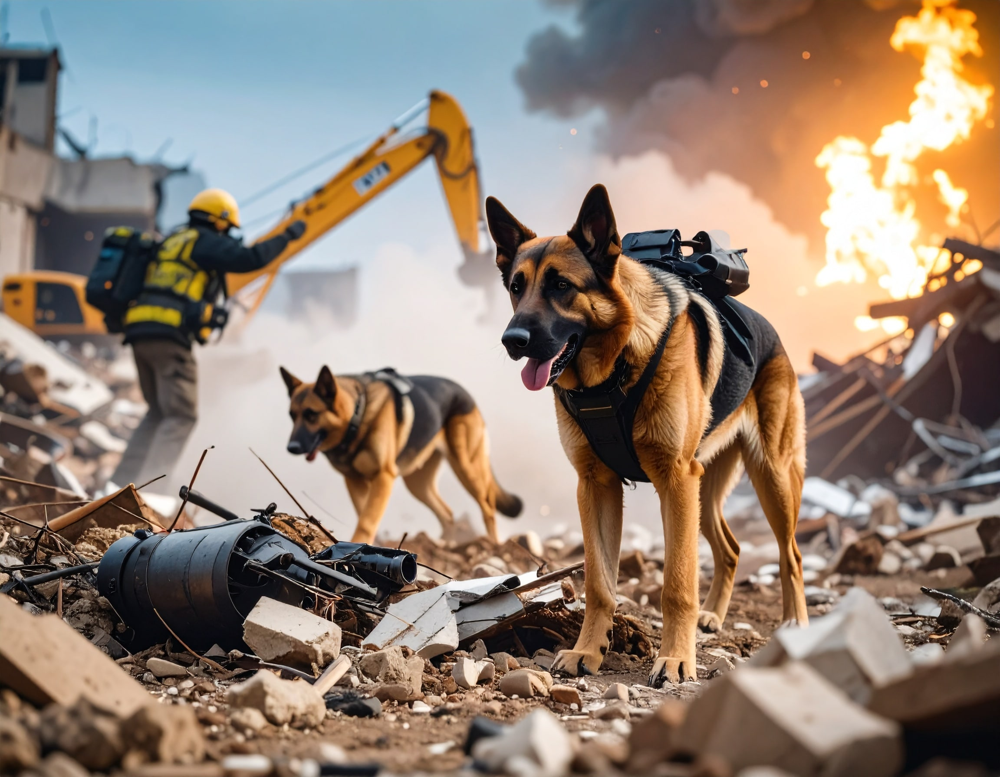

Perros de búsqueda y rescate: héroes con olfato
Los perros de búsqueda y rescate (K9) son entrenados para encontrar personas desaparecidas en zonas de desastre, bosques o estructuras colapsadas. Su olfato es miles de veces más sensible que el humano.
Entrenarlos requiere no solo enseñarles a detectar olores humanos, sino también a moverse con seguridad en entornos hostiles, no distraerse y mantener la motivación.
Estos perros deben tener un temperamento específico: seguridad, sociabilidad, iniciativa y resistencia. Las sesiones de adiestramiento son exigentes pero siempre positivas.
Participar en la formación de un perro de rescate es una de las tareas más gratificantes que existen. Son verdaderos héroes de cuatro patas.